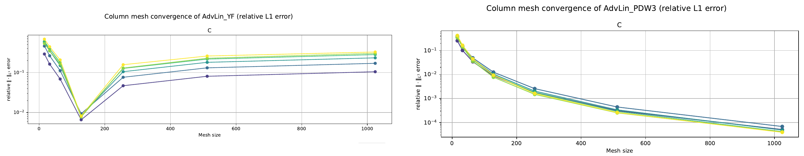

Accélérer un simulateur de chromatographie
Post-doctorat, Institut Élie Cartan de Lorraine (CNRS, 2024–2025), encadré par Jérémie Gaidamour (ingénieur de recherche CNRS) et Bruno Pinçon (maître de conférences), co-auteurs du rapport final de l'étude. Collaboration industrielle avec un éditeur de logiciels de simulation de procédés : trouver des pistes pour accélérer son simulateur de chromatographie, écrit en Fortran. J'ai mené l'analyse et réalisé l'ensemble des développements, hors calcul des solutions de référence par transformée de Laplace.
Problème
Une colonne de chromatographie sépare les espèces d'un mélange : la phase mobile les transporte, la phase stationnaire les adsorbe puis les relâche à des vitesses différentes. Pour chaque espèce, la conservation s'écrit
εe ∂tCi + (1 − εe) ∂tqi = D εe ∂z2Ci − εe u ∂zCi
couplée à des lois d'adsorption et à des équations algébriques (équilibre électrique, pH). Après discrétisation en volumes finis sur J cellules, avec N = K + K′ inconnues par cellule, on obtient un grand système différentiel-algébrique
F(Ẋ(t), X(t), t) = 0
intégré par DASPK (formules BDF jusqu'à l'ordre 5, Fortran 77). Le nombre de Péclet est élevé, ce qui impose des maillages fins, et chaque pas de temps demande des itérations de Newton : construction du jacobien par différences finies, factorisation LU, résolutions. Contrainte de l'industriel : garder DASPK et, dans un premier temps, le schéma en espace.
Exploiter la structure du jacobien
En numérotant les inconnues cellule par cellule, la matrice de Newton cj ∇ẊF + ∇XF est une matrice bande, de demi-largeurs mu = K et ml = N, que le code factorisait comme telle. Une analyse plus fine montre qu'elle est en fait bidiagonale par blocs : des blocs pleins Aj de taille N × N sur la diagonale, et des matrices diagonales −(u/Δz) I sous la diagonale, qui ne couplent que les espèces transportées. Trois pistes en découlent.
Piste 1, résolution par blocs. On factorise chaque bloc Aj séparément (en ⅔N3J opérations au lieu d'au moins 2N2JK), puis on résout les J systèmes en cascade de la première à la dernière cellule. Le jacobien se construit en N appels au résidu au lieu de N + K + 1, avec une correction pour le terme de couplage entre cellules. Cette piste a été implémentée dans le DASPK de l'industriel, sous forme d'option, puis présentée et validée par l'entreprise.
Piste 2, factorisation adaptée des blocs. Les Km premières lignes de chaque bloc ont une partie diagonale, dominée par le terme cj proportionnel à l'inverse du pas de temps. Seule la sous-matrice de taille N − Km demande une vraie factorisation, d'où un gain théorique de (N/(N − Km))3 sur la factorisation.
La piste 2 propose aussi de découper le calcul du résidu en trois procédures, une par famille d'équations : FM pour les équations algébriques de la phase mobile, F pour les fonctions d'adsorption, FS pour les équations algébriques de la phase stationnaire. Les parties linéaires du jacobien sont alors connues exactement, et l'écriture du résidu ne dépend plus du schéma choisi pour les équations de conservation. J'ai écrit un code de recherche, distinct du code industriel, organisé selon ce découpage.
Piste 3, résolution cellule par cellule. Le schéma n'ayant pas de terme de diffusion explicite (choix J = Pe/2), le système non linéaire peut se résoudre cellule après cellule, de l'amont vers l'aval, avec un sous-pas de temps local sur les rares cellules où Newton peine (là où le pH varie fortement). C'est la piste la plus prometteuse, mais elle demande de retravailler l'intégrateur en temps.
Une différentiation automatique en mode direct (nombres duaux par surcharge d'opérateurs en Fortran) a aussi été implémentée et testée pour le calcul du jacobien. Sur les cas disponibles, le surcoût n'était pas compensé par le gain de précision.
Côté performance pure, le code a été profilé avec Intel VTune et la construction du jacobien parallélisée avec OpenMP sur les boucles de cellules. À la taille des problèmes testés, le gain restait faible, ce qui a conduit à prioriser les méthodes numériques. Les factorisations des blocs Aj des pistes 1 et 2 sont en revanche indépendantes, donc naturellement parallélisables.
Schémas d'ordre élevé
Le schéma d'origine est d'ordre 1 et n'est précis que pour la discrétisation optimale J = Pe/2, où la diffusion numérique remplace la diffusion physique. Pour gagner en précision, un schéma WENO3 avec discrétisation explicite du flux diffusif (PDW3) a été comparé au schéma d'origine sur trois cas tests : advection-diffusion linéaire, adsorption linéaire et échange d'ions avec pH. Sur les deux premiers, des solutions de référence quasi exactes sont obtenues par transformée de Laplace.
Résultats

Sur le cas d'échange d'ions, en revanche, WENO3 met en échec les itérations de Newton : ses poids non linéaires basculent d'une itération à l'autre et le solveur alterne entre deux flux différents. Un schéma linéaire d'ordre 2 dérivé de WENO3 converge, mais peut osciller au voisinage des fronts.
Bilan et perspectives
L'analyse d'un code industriel existant jusqu'à la structure de ses matrices, pour en tirer des optimisations chiffrées, compatibles avec ses contraintes et validées par l'industriel. Puis une évaluation rigoureuse de schémas plus précis, y compris de leurs limites.
La piste 3, résolution cellule par cellule, reste la plus prometteuse pour aller plus loin : elle demande de retravailler l'intégrateur en temps. Côté schémas, il reste à rendre WENO compatible avec les itérations de Newton sur les cas non linéaires.
Outils
Fortran, OpenMP, Intel VTune, DASPK, algèbre linéaire creuse (LU bande et par blocs), volumes finis, WENO, différentiation automatique